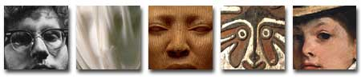
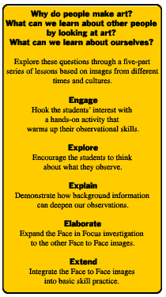

Download
the lesson
*These files require Adobe Acrobat. Acrobat is available for free at www.adobe.com
Gallery of Faces
View an assortment of faces in art from around the world found in the collections of The Minneapolis Institute of Arts.
Make Your Own Exhibit
Select images from the Gallery of Faces or from the ArtsConnectEd database and make your own exhibit.
How
to Zoom
Want to look closer? Any time you see the icon above, you can zoom in on that image. After you click the image, a small window will open. Move the cursor to any area of the image in that window and click the mouse. Each click zooms you in another step closer. Click on the arrows beside the image to shift to another part of the image.